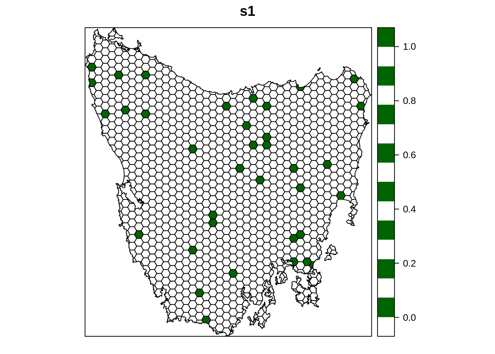

Chapter 5 Spatial prioritizations
5.1 Introduction
Here we will develop prioritizations to identify priority areas for protected area establishment. Its worth noting that prioritizr, Marxan, and Zonation are all decision support tools. This means that these tools are all designed to help you make decisions—they can’t make decisions for you.
5.2 Starting out simple
To start things off, let’s keep things simple. Let’s create a prioritization using the minimum set problem formulation of the reserve selection problem. This problem will have 5% targets for each vegetation class and use the data in the cost column to specify acquisition costs. Although we strongly recommend using Gurobi to solve problems (add_gurobi_solver), we will use the lpsymphony solver in this workshop since it is much easier to install. The Gurobi solver is the fastest solver that prioritizr can use to generate solutions and is much, much, much faster than the lpsymphony solver (see here for Gurobi installation instructions).
# print planning unit data
print(pu_data)## class : SpatialPolygonsDataFrame
## features : 1130
## extent : 1080623, 1399989, -4840595, -4497092 (xmin, xmax, ymin, ymax)
## crs : +proj=aea +lat_1=-18 +lat_2=-36 +lat_0=0 +lon_0=132 +x_0=0 +y_0=0 +ellps=GRS80 +units=m +no_defs
## variables : 6
## names : id, cost, status, locked_in, locked_out, pa_status
## min values : 1, 0.192488262910798, 0, 0, 0, 0
## max values : 1130, 61.9272727272727, 2, 1, 1, 1# make prioritization problem
p1 <- problem(pu_data, veg_data, cost_column = "cost") %>%
add_min_set_objective() %>%
add_relative_targets(0.05) %>% # 5% representation targets
add_binary_decisions() %>%
add_lpsymphony_solver(verbose = FALSE)
# print problem
print(p1)## Conservation Problem
## planning units: SpatialPolygonsDataFrame (1130 units)
## cost: min: 0.19249, max: 61.92727
## features: vegetation.1, vegetation.2, vegetation.3, ... (62 features)
## objective: Minimum set objective
## targets: Relative targets [targets (min: 0.05, max: 0.05)]
## decisions: Binary decision
## constraints: <none>
## penalties: <none>
## portfolio: default
## solver: Lpsymphony [first_feasible (0), gap (0.1), time_limit (-1), verbose (0)]# solve problem
s1 <- solve(p1)
# print solution,
# the solution_1 column contains the solution values with binary values
# indicating if a planning unit was selected as a (1) priority area or (0) not
print(s1)## class : SpatialPolygonsDataFrame
## features : 1130
## extent : 1080623, 1399989, -4840595, -4497092 (xmin, xmax, ymin, ymax)
## crs : +proj=aea +lat_1=-18 +lat_2=-36 +lat_0=0 +lon_0=132 +x_0=0 +y_0=0 +ellps=GRS80 +units=m +no_defs
## variables : 7
## names : id, cost, status, locked_in, locked_out, pa_status, solution_1
## min values : 1, 0.192488262910798, 0, 0, 0, 0, 0
## max values : 1130, 61.9272727272727, 2, 1, 1, 1, 1# calculate number of planning units selected in the prioritization
sum(s1$solution_1)## [1] 36# calculate total cost of the prioritization
sum(s1$solution_1 * s1$cost)## [1] 806.2393# plot solution
spplot(s1, "solution_1", col.regions = c("white", "darkgreen"), main = "s1")
Now let’s examine the solution.
- How many planing units were selected in the prioritization? What proportion of planning units were selected in the prioritization?
- Is there a pattern in the spatial distribution of the priority areas?
- Can you verify that all of the targets were met in the prioritization (hint:
feature_representation(p1, s1[, "solution_1"]))? - What are limitations of this prioritization?
5.3 Adding complexity
Our first prioritization suffers many limitations, so let’s add additional constraints to the problem to make it more useful. First, let’s lock in planing units that are already inside protected areas.
# make prioritization problem
p2 <- problem(pu_data, veg_data, cost_column = "cost") %>%
add_min_set_objective() %>%
add_relative_targets(0.05) %>%
add_locked_in_constraints("locked_in") %>%
add_binary_decisions() %>%
add_lpsymphony_solver(verbose = FALSE)
# print problem
print(p2)## Conservation Problem
## planning units: SpatialPolygonsDataFrame (1130 units)
## cost: min: 0.19249, max: 61.92727
## features: vegetation.1, vegetation.2, vegetation.3, ... (62 features)
## objective: Minimum set objective
## targets: Relative targets [targets (min: 0.05, max: 0.05)]
## decisions: Binary decision
## constraints: <Locked in planning units [257 locked units]>
## penalties: <none>
## portfolio: default
## solver: Lpsymphony [first_feasible (0), gap (0.1), time_limit (-1), verbose (0)]# solve problem
s2 <- solve(p2)
# plot solution
spplot(s2, "solution_1", col.regions = c("white", "darkgreen"), main = "s2")Let’s pretend we talked to an expert on the vegetation communities in our study system and they recommended that a 20% target was needed. So, now let’s set the targets to 20% of their total distribution in the study area.
# make prioritization problem
p3 <- problem(pu_data, veg_data, cost_column = "cost") %>%
add_min_set_objective() %>%
add_relative_targets(0.2) %>%
add_locked_in_constraints("locked_in") %>%
add_binary_decisions() %>%
add_lpsymphony_solver(verbose = FALSE)
# print problem
print(p3)## Conservation Problem
## planning units: SpatialPolygonsDataFrame (1130 units)
## cost: min: 0.19249, max: 61.92727
## features: vegetation.1, vegetation.2, vegetation.3, ... (62 features)
## objective: Minimum set objective
## targets: Relative targets [targets (min: 0.2, max: 0.2)]
## decisions: Binary decision
## constraints: <Locked in planning units [257 locked units]>
## penalties: <none>
## portfolio: default
## solver: Lpsymphony [first_feasible (0), gap (0.1), time_limit (-1), verbose (0)]# solve problem
s3 <- solve(p3)
# plot solution
spplot(s3, "solution_1", col.regions = c("white", "darkgreen"), main = "s3")Next, let’s lock out highly degraded areas.
# make prioritization problem
p4 <- problem(pu_data, veg_data, cost_column = "cost") %>%
add_min_set_objective() %>%
add_relative_targets(0.2) %>%
add_locked_in_constraints("locked_in") %>%
add_locked_out_constraints("locked_out") %>%
add_binary_decisions() %>%
add_lpsymphony_solver(verbose = FALSE)
# print problem
print(p4)## Conservation Problem
## planning units: SpatialPolygonsDataFrame (1130 units)
## cost: min: 0.19249, max: 61.92727
## features: vegetation.1, vegetation.2, vegetation.3, ... (62 features)
## objective: Minimum set objective
## targets: Relative targets [targets (min: 0.2, max: 0.2)]
## decisions: Binary decision
## constraints: <Locked out planning units [51 locked units]
## Locked in planning units [257 locked units]>
## penalties: <none>
## portfolio: default
## solver: Lpsymphony [first_feasible (0), gap (0.1), time_limit (-1), verbose (0)]# solve problem
s4 <- solve(p4)
# plot solution
spplot(s4, "solution_1", col.regions = c("white", "darkgreen"), main = "s4")
Now, let’s compare the solutions.
- What is the cost of the planning units selected in
s2,s3, ands4? - How many planning units are in
s2,s3, ands4? - Do the solutions with more planning units have a greater cost? Why or why not?
- Why does the first solution (
s1) cost less than the second solution with protected areas locked into the solution (s2)? - Why does the third solution (
s3) cost less than the fourth solution solution with highly degraded areas locked out (s4)? - Since planning units covered by existing protected areas have already been purchased, what is the cost for expanding the protected area system based on on the fourth prioritization (
s4) (hint: total cost minus the cost of locked in planning units)? - What happens if you specify targets that exceed the total amount of vegetation in the study area? You can do this by rerunning the code to make
p4withadd_absolute_targets(1000)instead ofadd_relative_targets(0.2)and generating a new solution?
5.4 Budget limited prioritizations
In many systematic conservation planning exercises, there is a limit on the expenditure for land acquisition. This means that decision makers need prioritizations where the total cost of the priority areas does not exceed a budget. In our previous prioritization (s4), we found that we would need $9384 million AUD to ensure that each vegetation community is adequately represented in the protected area system. But what if the funds available for additional land acquisition were limited to $1000? Let’s create a budget-limited prioritization that aims to adequately represent as many targets as possible whilst remaining within a budget.
# set the funds for additional land acquisition
funds <- 1000
# calculate the total budget for the prioritization
budget <- funds + sum(s4$cost * s4$locked_in)
print(budget)## [1] 9475.56# make prioritization problem
p5 <- problem(pu_data, veg_data, cost_column = "cost") %>%
add_max_features_objective(budget) %>%
add_relative_targets(0.2) %>%
add_locked_in_constraints("locked_in") %>%
add_locked_out_constraints("locked_out") %>%
add_binary_decisions() %>%
add_lpsymphony_solver(verbose = FALSE)
# print problem
print(p5)## Conservation Problem
## planning units: SpatialPolygonsDataFrame (1130 units)
## cost: min: 0.19249, max: 61.92727
## features: vegetation.1, vegetation.2, vegetation.3, ... (62 features)
## objective: Maximum representation objective [budget (9475.56009869836)]
## targets: Relative targets [targets (min: 0.2, max: 0.2)]
## decisions: Binary decision
## constraints: <Locked out planning units [51 locked units]
## Locked in planning units [257 locked units]>
## penalties: <none>
## portfolio: default
## solver: Lpsymphony [first_feasible (0), gap (0.1), time_limit (-1), verbose (0)]# solve problem
s5 <- solve(p5)
# plot solution
spplot(s5, "solution_1", col.regions = c("white", "darkgreen"), main = "s5")